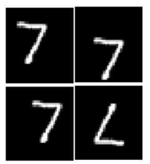

|
Raunak Manekar I am a PhD candidate at University of Minnesota, TC working with Prof. Jaideep Srivastava. Currently I am a visiting researcher at Coherent Imaging Group, UCLA with Prof. John Miao. My research focuses on machine learning for scientific imaging. Previously, I have graduated from Birla Institute of Technology and Science, Pilani (India) advised by Prof. Chandra Shekhar. Additionally I have also spent a year at Central Electronics Research (CEERI), India. Email / CV / Google Scholar / LinkedIn |
{kind=link}
ResearchI'm interested in computer vision, machine learning and computational imaging. Most of my research is about developing techniques for inverse problems in imaging. |
|
Breaking Symmetries in Data-Driven Phase Retrieval
Raunak Manekar, Kshitij Tayal, Zhong Zhuang, Chieh-Hsin Lai, Vipin Kumar, Ju Sun, Computational Optical Sensing and Imaging , 2021 Supervised learning for inverse problems requires a careful handling of the symmetries. |
|
|  |
Deep Learning Initialized Phase Retrieval
Raunak Manekar, Zhong Zhuang, Kshitij Tayal, Vipin Kumar, Ju Sun, NeurIPS 2020 Workshop on Deep Learning and Inverse Problems , 2020 An unsupervised data-driven technique for practical phase retrieval. |
|
End-to-end learning for phase retrieval
Raunak Manekar, Kshitij Tayal, Vipin Kumar, Ju Sun, ICML workshop on ML Interpretability for Scientific Discovery , 2020 Exploring dataset-bias in end-to-end learning for phase retrieval |
|
|
Phase Retrieval using Single-Instance Deep Generative Prior
Kshitij Tayal, Raunak Manekar, Zhong Zhuang, David Yang, Vipin Kumar, Felix Hofmann, Ju Sun, Optics and Photonics for Sensing the Environment.OSA , 2021 Unsupervised single-instance method for phase retrieval |
Service |
 |
Reviewer, CVPR 2022, ECCV 2022
Reviewer, Neurips 2022,2023 ICLR 2022 (Highlighted reviewer) Reviewer, AAAI '22 (Intl Workshop on Health Intelligence) Reviewer, Springer Autonomous Robots Journal |
Awards |
|
Travel award- ICML '17(Sydney)
Travel award- CSCI 5523: NeurIPS '22(New Orleans) ICLR '22 Highlighted Reviewer |
Teaching |
|
Teaching assistant
CSCI 5521: Machine Learning Fundamentals CSCI 5523: Data Mining CSCI 1933: Intro to Data Structures and Algorithms |
|
Website template taken from Jon Barren. |